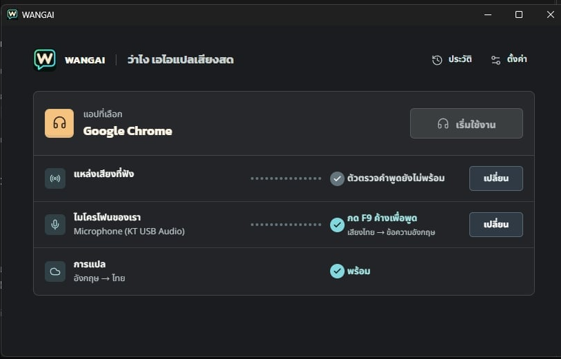
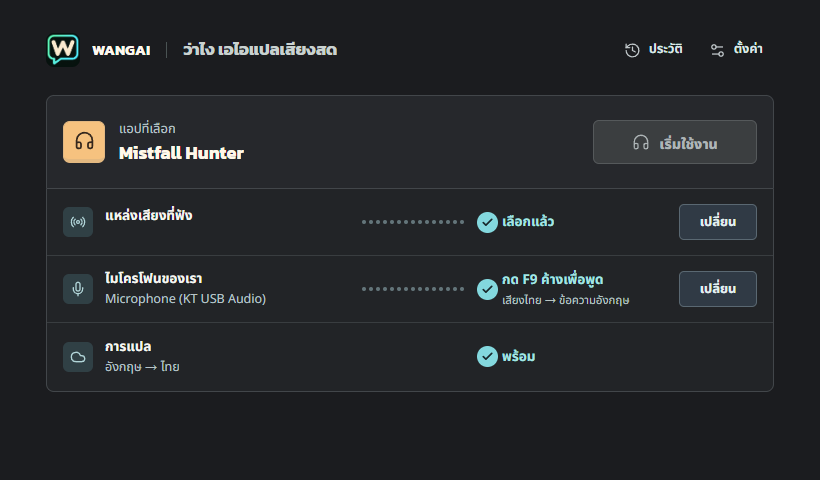
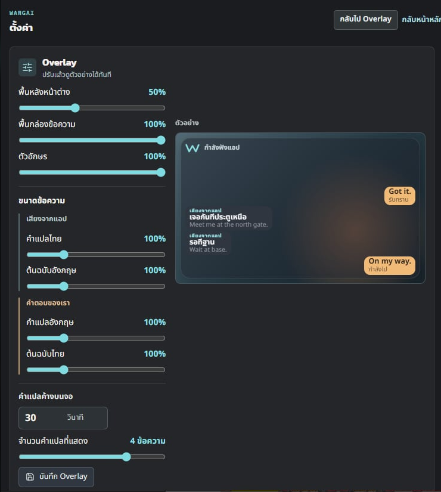
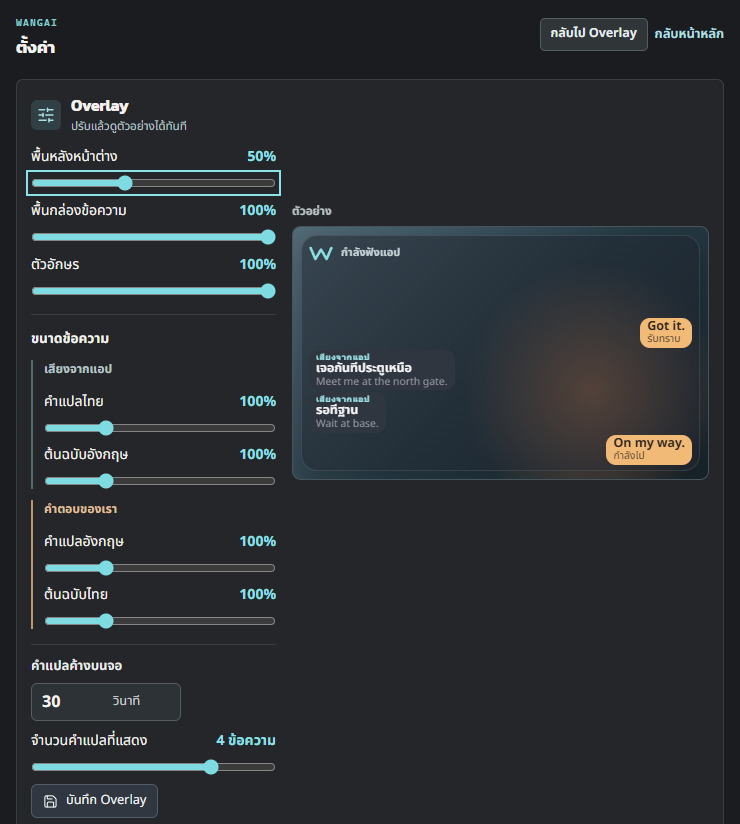
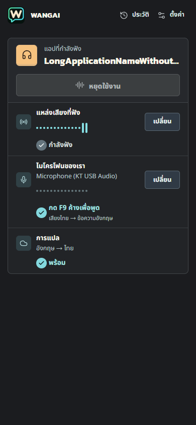

ต้นทาง: thefogusz/wangai-overlay @ 5c3e05e4 · ภาพขวาเป็น React ที่ทำงานจริงใน browser preview ไม่ใช่ภาพวาดจำลอง ชื่อแอปและสถานะต่างกันตามข้อมูลทดสอบ หน้าหลักฝั่งต้นฉบับมีกรอบ Windows รวมอยู่ด้วย


พื้นหลัง 50% · กล่องข้อความ/ตัวอักษร 100% · ขนาดข้อความสี่ส่วน 100% · แสดง 30 วินาที / 4 ข้อความ


390×844 พร้อมชื่อแอปยาว ปรับแถวสถานะให้เรียงลงมาและคงปุ่มประวัติ/ตั้งค่าไว้
